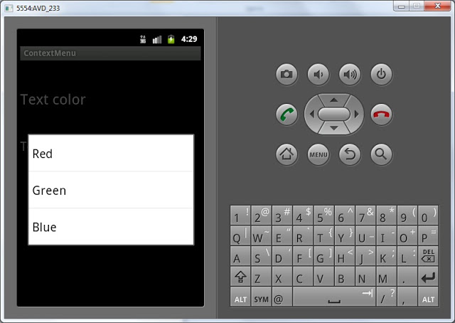

В этом уроке мы:
- создадим контекстное меню
Контекстное меню вызывается в Андроид длительным нажатием на каком-либо экранном компоненте. Обычно оно используется в списках. Когда на экран выводится список однородных объектов (например письма в почт.ящике) и, чтобы выполнить действие с одним из этих объектов, мы вызываем контекстное меню для него. Но т.к. списки мы еще не проходили, сделаем пример попроще и будем вызывать контекстное меню для TextView.
Создадим проект:
Project name: P0151_ContextMenu
Build Target: Android 4.0
Application name: ContextMenu
Package name: ru.startandroid.develop.contextmenu
Create Activity: MainActivity
Откроем main.xml и нарисуем там два TextView:
<?xml version="1.0" encoding="utf-8"?>
<LinearLayout
xmlns:android="http://schemas.android.com/apk/res/android"
android:orientation="vertical"
android:layout_width="fill_parent"
android:layout_height="fill_parent">
<TextView
android:layout_height="wrap_content"
android:textSize="26sp"
android:layout_width="wrap_content"
android:id="@+id/tvColor"
android:layout_marginBottom="50dp"
android:layout_marginTop="50dp"
android:text="Text color">
</TextView>
<TextView
android:layout_width="fill_parent"
android:layout_height="wrap_content"
android:textSize="22sp"
android:id="@+id/tvSize"
android:text="Text size">
</TextView>
</LinearLayout>Для первого TextView мы сделаем контекстное меню, с помощью которого будем менять цвет текста. Для второго – будем менять размер текста.
Принцип создания контекстного меню похож на создание обычного меню. Но есть и отличия.
Метод создания onCreateContextMenu вызывается каждый раз перед показом меню. На вход ему передается:
- ContextMenu, в который мы будем добавлять пункты
- View - элемент экрана, для которого вызвано контекстное меню
- ContextMenu.ContextMenuInfo – содержит доп.информацию, когда контекстное меню вызвано для элемента списка. Пока мы это не используем, но, когда будем изучать списки, увидим, что штука полезная.
Метод обработки onContextItemSelected аналогичный методу onOptionsItemSelected для обычного меню. На вход передается MenuItem – пункт меню, который был нажат.
Также нам понадобится третий метод registerForContextMenu. На вход ему передается View и это означает, что для этой View необходимо создавать контекстное меню. Если не выполнить этот метод, контекстное меню для View создаваться не будет.
MainActivity.java. Опишем и найдем TextView и укажем, что необходимо создавать для них контекстное меню.
TextView tvColor, tvSize;
/** Called when the activity is first created. */
@Override
public void onCreate(Bundle savedInstanceState) {
super.onCreate(savedInstanceState);
setContentView(R.layout.main);
tvColor = (TextView) findViewById(R.id.tvColor);
tvSize = (TextView) findViewById(R.id.tvSize);
// для tvColor и tvSize необходимо создавать контекстное меню
registerForContextMenu(tvColor);
registerForContextMenu(tvSize);
}Теперь опишем создание контекстных меню. Используем константы для хранения ID пунктов меню.
final int MENU_COLOR_RED = 1;
final int MENU_COLOR_GREEN = 2;
final int MENU_COLOR_BLUE = 3;
final int MENU_SIZE_22 = 4;
final int MENU_SIZE_26 = 5;
final int MENU_SIZE_30 = 6;И создаем
@Override
public void onCreateContextMenu(ContextMenu menu, View v,
ContextMenuInfo menuInfo) {
// TODO Auto-generated method stub
switch (v.getId()) {
case R.id.tvColor:
menu.add(0, MENU_COLOR_RED, 0, "Red");
menu.add(0, MENU_COLOR_GREEN, 0, "Green");
menu.add(0, MENU_COLOR_BLUE, 0, "Blue");
break;
case R.id.tvSize:
menu.add(0, MENU_SIZE_22, 0, "22");
menu.add(0, MENU_SIZE_26, 0, "26");
menu.add(0, MENU_SIZE_30, 0, "30");
break;
}
}Обратите внимание, что мы по ID определяем View, для которого вызвано контекстное меню и в зависимости от этого создаем определенное меню. Т.е. если контекстное меню вызвано для tvColor, то мы создаем меню с перечислением цветов, а если для tvSize – с размерами шрифта.
В качестве ID пунктов мы использовали константы. Группировку и сортировку не используем, поэтому используем нули в качестве соответствующих параметров.
Можно все сохранить и запустить. При долгом нажатии на TextView должны появляться контекстные меню.

Но нажатие на них ничего не дает, т.к. мы не прописали обработку в методе onContextItemSelected. Давайте пропишем:
@Override
public boolean onContextItemSelected(MenuItem item) {
// TODO Auto-generated method stub
switch (item.getItemId()) {
// пункты меню для tvColor
case MENU_COLOR_RED:
tvColor.setTextColor(Color.RED);
tvColor.setText("Text color = red");
break;
case MENU_COLOR_GREEN:
tvColor.setTextColor(Color.GREEN);
tvColor.setText("Text color = green");
break;
case MENU_COLOR_BLUE:
tvColor.setTextColor(Color.BLUE);
tvColor.setText("Text color = blue");
break;
// пункты меню для tvSize
case MENU_SIZE_22:
tvSize.setTextSize(22);
tvSize.setText("Text size = 22");
break;
case MENU_SIZE_26:
tvSize.setTextSize(26);
tvSize.setText("Text size = 26");
break;
case MENU_SIZE_30:
tvSize.setTextSize(30);
tvSize.setText("Text size = 30");
break;
}
return super.onContextItemSelected(item);
}В этом методе мы определяем по ID, какой пункт меню был нажат. И выполняем соответствующие действия: меняем цвет текста для tvColor или размер шрифта для tvSize. Сохраняем, запускаем и проверяем, что контекстные меню теперь реагируют на нажатия и делают то, что от них требуется.
Для расширения кругозора я хотел бы еще кое-что написать по этой теме. Возможно, это покажется пока сложноватым, так что если вдруг будет непонятно, ничего страшного. Итак, мысли вслух.
Мы использовали метод registerForContextMenu (View view) для включения контекстного меню для определенного View. Этот метод принадлежит классу Activity. Я посмотрел исходники этого метода, там написано следующее:
public void registerForContextMenu(View view) {
view.setOnCreateContextMenuListener(this);
}Вспоминаем наш урок по обработчикам и смотрим документацию по методу setOnCreateContextMenuListener (View.OnCreateContextMenuListener l). Получается, что View в качестве обработчика создания контекстного меню использует объект this. В данном случае, этот код в Activity, значит this – это Activity и есть. Т.е. когда View хочет показать контекстное меню, оно обращается к обработчику (Activity), а он уже выполняет свой метод onCreateContextMenu. Т.е. тот же самый принцип, что и при обычном нажатии (Click).
И строка в MainActivity.java:
registerForContextMenu(tvColor);абсолютно равнозначна этой строке:
tvColor.setOnCreateContextMenuListener(this);Вообще мы можем создать свой объект, реализующий интерфейс View.OnCreateContextMenuListener и использовать его вместо Activity в качестве обработчика создания контекстного меню.
Не забывайте, что для контекстного меню вы также можете использовать XML-способ, который был рассмотрен в конце прошлого урока. Попробуйте сделать этот же урок, но уже с использованием XML-меню.
Полный код урока:
public class MainActivity extends Activity {
final int MENU_COLOR_RED = 1;
final int MENU_COLOR_GREEN = 2;
final int MENU_COLOR_BLUE = 3;
final int MENU_SIZE_22 = 4;
final int MENU_SIZE_26 = 5;
final int MENU_SIZE_30 = 6;
TextView tvColor, tvSize;
/** Called when the activity is first created. */
@Override
public void onCreate(Bundle savedInstanceState) {
super.onCreate(savedInstanceState);
setContentView(R.layout.main);
tvColor = (TextView) findViewById(R.id.tvColor);
tvSize = (TextView) findViewById(R.id.tvSize);
// для tvColor и tvSize необходимо создавать контекстное меню
registerForContextMenu(tvColor);
registerForContextMenu(tvSize);
}
@Override
public void onCreateContextMenu(ContextMenu menu, View v,
ContextMenuInfo menuInfo) {
// TODO Auto-generated method stub
switch (v.getId()) {
case R.id.tvColor:
menu.add(0, MENU_COLOR_RED, 0, "Red");
menu.add(0, MENU_COLOR_GREEN, 0, "Green");
menu.add(0, MENU_COLOR_BLUE, 0, "Blue");
break;
case R.id.tvSize:
menu.add(0, MENU_SIZE_22, 0, "22");
menu.add(0, MENU_SIZE_26, 0, "26");
menu.add(0, MENU_SIZE_30, 0, "30");
break;
}
}
@Override
public boolean onContextItemSelected(MenuItem item) {
// TODO Auto-generated method stub
switch (item.getItemId()) {
// пункты меню для tvColor
case MENU_COLOR_RED:
tvColor.setTextColor(Color.RED);
tvColor.setText("Text color = red");
break;
case MENU_COLOR_GREEN:
tvColor.setTextColor(Color.GREEN);
tvColor.setText("Text color = green");
break;
case MENU_COLOR_BLUE:
tvColor.setTextColor(Color.BLUE);
tvColor.setText("Text color = blue");
break;
// пункты меню для tvSize
case MENU_SIZE_22:
tvSize.setTextSize(22);
tvSize.setText("Text size = 22");
break;
case MENU_SIZE_26:
tvSize.setTextSize(26);
tvSize.setText("Text size = 26");
break;
case MENU_SIZE_30:
tvSize.setTextSize(30);
tvSize.setText("Text size = 30");
break;
}
return super.onContextItemSelected(item);
}
}